File: 000690.gt.txt (if the image is defective, simply delete all Arabic text and the line will be excluded)
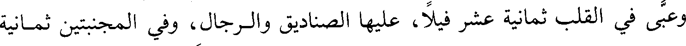
وعبى في القلب ثمانية عشر فيلا، عليها الصناديق والرجال، وفي المجنبتين ثمانية
File: 000691.gt.txt (if the image is defective, simply delete all Arabic text and the line will be excluded)
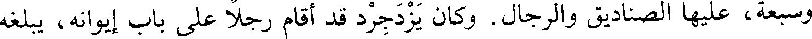
وسبعة، عليها الصناديق والرجال. وكان يزدجرد قد أقام رجلا على باب إيوانه، يبلغه
File: 000692.gt.txt (if the image is defective, simply delete all Arabic text and the line will be excluded)
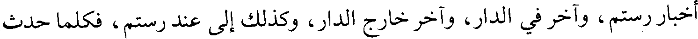
أخبار رستم، وآخر في الدار، وآخر خارج الدار، وكذلك إلى عند رستم، فكلما حدث
File: 000693.gt.txt (if the image is defective, simply delete all Arabic text and the line will be excluded)
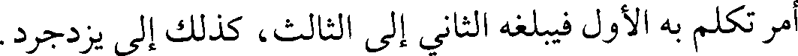
أمر تكلم به الأول فيبلغه الثاني إلى الثالث، كذلك إلى يزدجرد.
File: 000694.gt.txt (if the image is defective, simply delete all Arabic text and the line will be excluded)
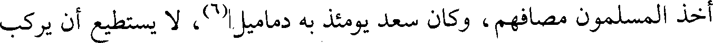
أخذ المسلمون مصافهم، وكان سعد يومئذ به دماميل(6)، لا يستطيع أن يركب
File: 000695.gt.txt (if the image is defective, simply delete all Arabic text and the line will be excluded)
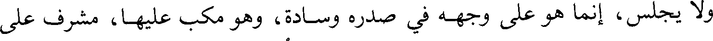
ولا يجلس، إنما هو على وجهه في صدره وسادة، وهو مكب عليها، مشرف على
File: 000696.gt.txt (if the image is defective, simply delete all Arabic text and the line will be excluded)
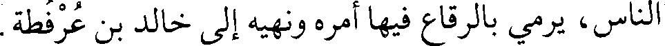
الناس، يرمي بالرقاع فيها أمره ونهيه إلى خالد بن عرفطة.
File: 000697.gt.txt (if the image is defective, simply delete all Arabic text and the line will be excluded)
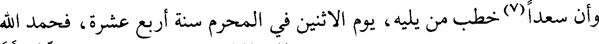
وأن سعدا(7) خطب من يليه، يوم الاثنين في المحرم سنة أربع عشرة، فحمد الله
File: 000698.gt.txt (if the image is defective, simply delete all Arabic text and the line will be excluded)
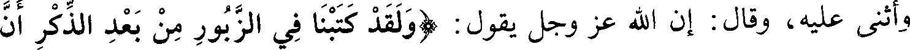
وأثنى عليه، وقال : إن الله عز وجل يقول : (ولقد كتبنا في الزبور من بعد الذكر أن
File: 000699.gt.txt (if the image is defective, simply delete all Arabic text and the line will be excluded)
147
File: 000700.gt.txt (if the image is defective, simply delete all Arabic text and the line will be excluded)
File: 000701.gt.txt (if the image is defective, simply delete all Arabic text and the line will be excluded)
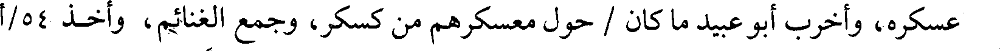
عسكره، وأخرب أبو عبيد ما كان / حول معسكرهم من كسكر، وجمع الغنائم، وأخذ 54/أ
File: 000702.gt.txt (if the image is defective, simply delete all Arabic text and the line will be excluded)
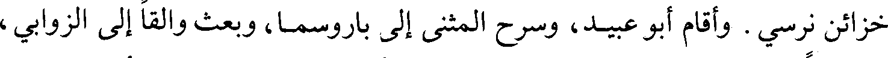
خزائن نرسي. وأقام أبو عبيد، وسرح المثنى إلى باروسما، وبعث والقا إلى الزوابي،
File: 000703.gt.txt (if the image is defective, simply delete all Arabic text and the line will be excluded)
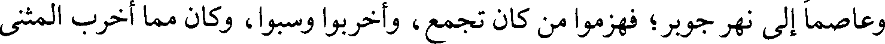
وعاصما إلى نهر جوبر؛ فهزموا من كان تجمع، وأخربوا وسبوا، وكان مما أخرب المثنى
File: 000704.gt.txt (if the image is defective, simply delete all Arabic text and the line will be excluded)
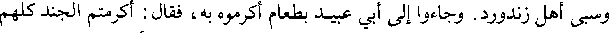
وسبى أهل زندورد. وجاءوا إلى أبي عبيد بطعام أكرموه به، فقال : أكرمتم الجند كلهم
File: 000705.gt.txt (if the image is defective, simply delete all Arabic text and the line will be excluded)
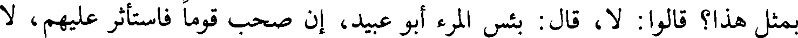
بمثل هذا؟ قالوا : لا، قال : بئس المرء أبو عبيد، إن صحب قوما فاستأثر عليهم، لا
File: 000706.gt.txt (if the image is defective, simply delete all Arabic text and the line will be excluded)
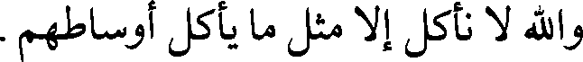
والله لا نأكل إلا مثل ما يأكل أوساطهم.
File: 000707.gt.txt (if the image is defective, simply delete all Arabic text and the line will be excluded)
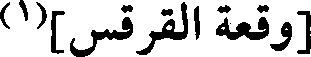
[وقعة القرقس](1)
File: 000708.gt.txt (if the image is defective, simply delete all Arabic text and the line will be excluded)
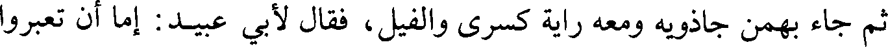
ثم جاء بهمن جاذويه ومعه راية كسرى والفيل، فقال لأبي عبيد : إما أن تعبروا
File: 000709.gt.txt (if the image is defective, simply delete all Arabic text and the line will be excluded)
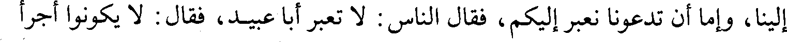
إلينا، وإما أن تدعونا نعبر إليكم، فقال الناس : لا تعبر أبا عبيد، فقال : لا يكونوا أجرأ
File: 000710.gt.txt (if the image is defective, simply delete all Arabic text and the line will be excluded)
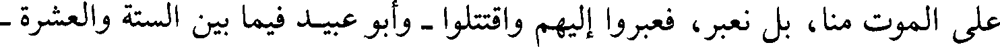
على الموت منا، بل نعبر، فعبروا إليهم واقتتلوا - وأبو عبيد فيما بين الستة والعشرة -
File: 000711.gt.txt (if the image is defective, simply delete all Arabic text and the line will be excluded)
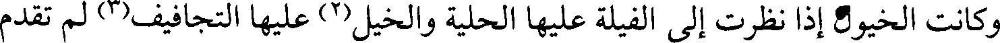
File: 000712.gt.txt (if the image is defective, simply delete all Arabic text and the line will be excluded)
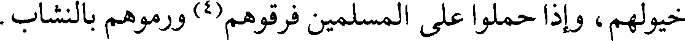
خيولهم، وإذا حملوا على المسلمين فرقوهم(4) ورموهم بالنشاب.
File: 000713.gt.txt (if the image is defective, simply delete all Arabic text and the line will be excluded)
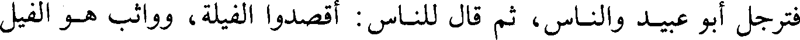
فترجل أبو عبيد والناس، ثم قال للناس : أقصدوا الفيلة، وواثب هو الفيل
File: 000714.gt.txt (if the image is defective, simply delete all Arabic text and the line will be excluded)
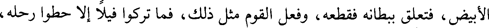
الأبيض، فتعلق ببطانه فقطعه، وفعل القوم مثل ذلك، فما تركوا فيلا إلا حطوا رحله،
File: 000715.gt.txt (if the image is defective, simply delete all Arabic text and the line will be excluded)
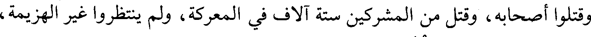
وقتلوا أصحابه، وقتل من المشركين ستة آلاف في المعركة، ولم ينتظروا غير الهزيمة،
File: 000716.gt.txt (if the image is defective, simply delete all Arabic text and the line will be excluded)
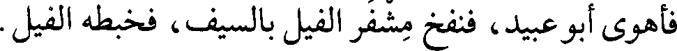
فأهوى أبو عبيد، فنفخ مشفر الفيل بالسيف، فخبطه الفيل.
File: 000717.gt.txt (if the image is defective, simply delete all Arabic text and the line will be excluded)
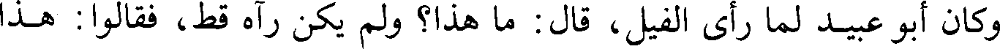
وكان أبو عبيد لما رأى الفيل، قال : ما هذا؟ ولم يكن رآه قط، فقالوا : هذا
File: 000718.gt.txt (if the image is defective, simply delete all Arabic text and the line will be excluded)
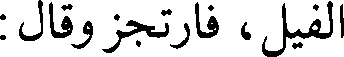
الفيل، فارتجز وقال :
File: 000719.gt.txt (if the image is defective, simply delete all Arabic text and the line will be excluded)
يا لك من ذي أربع ما أكبرك. يا لك من يوم وغى ما أمكنك
To Save: `Ctrl+s`, make sure to choose `Webpage, complete`!